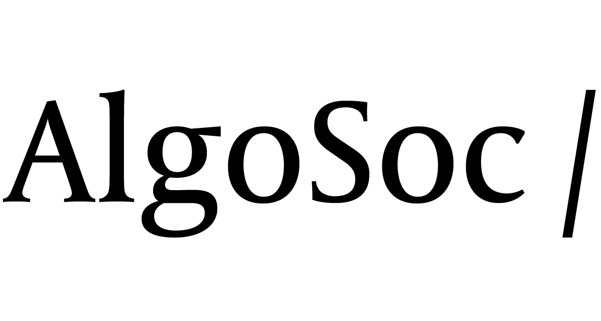

Converging Perspectives on Health AI: Bridging Technical, Healthcare, Sociolegal, and Ethical Research
All deadlines are Anywhere on Earth (AoE).
| Abstract registration deadline: | 31 July |
| Workshop paper submissions deadline: | 10 Aug |
| Notification of acceptance: | 1 Sep |
| Workshop registration deadline: | 11 Sep |
| Camera-ready papers due: | 14 Sep |
| AIES 2026 conference: | 12–14 Oct |
| Workshop day: | 15 Oct |
Over the last decade, artificial intelligence (AI) systems have been increasingly deployed in the healthcare domain and have become commonplace within conversations around health. Our focus is on AI deployed in health and care settings - systems that enter diagnosis, treatment, and the work of healthcare providers, while remaining attentive to the wider conditions of health in which these systems operate. As AI systems rapidly reshape the healthcare environment, meaningful impact, not merely good performance, becomes the critical concern. This has led to a growth in research pertaining to, among others, explainable and trustworthy AI. Nevertheless, many existing AI systems still fail to deliver on their promises in healthcare workflows and other real-world use cases, often because legal, ethical, and epistemic challenges have not been integrated into their development and deployment.
Furthermore, AIES provides a groundwork for sharing research across computer and social sciences, law and policy, ethics, and philosophy. Within each of these domains, AI systems for health are developed and evaluated under different definitions of accountability, ethics, trustworthiness, safety, and compliance. The result is that each domain remains siloed from the others, with little articulation across the health AI field. Yet this articulation is essential for the development and evaluation of real-world AI systems. We count ourselves within this condition rather than outside it: as organizers drawn from computer science, social science, law, ethics, and philosophy, we recognize that the meanings we attach to terms such as accountability, trust, safety, and compliance are themselves shaped by the disciplines that trained us. These are, in a precise sense, essentially contested concepts (Gallie, 1956), and the divergence among our usages is a structural feature of cross-disciplinary work rather than a failure of rigour. We do not assume that a single shared definition can or should be imposed. Instead, we offer this workshop as a trading zone (Galison, 1997) in which differing disciplinary understandings can be surfaced, held side by side, and articulated. What we seek is the convergence of perspectives, understood as an achievement to be worked toward, not a premise to be assumed.
To this end, the Converging Perspectives on Health AI Workshop aims to provide a space for community building centered on the question: How can we develop healthcare AI systems that are clinically useful, technically robust, socially acceptable, and responsibly deployed? Or, put simply, how should we be using or not using AI in real-world clinical settings?
We especially encourage submissions that:
Gallie, W. B. (1955, January). Essentially contested concepts. In Proceedings of the Aristotelian society (Vol. 56, pp. 167-198). Aristotelian Society, Wiley.
Galison, P. (1997). Image and logic: A material culture of microphysics. University of Chicago Press
The list is illustrative, not exhaustive. The groupings name shared problems, not disciplines; most contributions will speak to more than one, and we particularly welcome work that does.
| 09:00–09:30 | Arrivals & Coffee |
| 09:30–09:45 | Introduction and welcome |
| 09:45–12:00 | Accepted authors present (time dependent on acceptances) |
| 12:00–13:00 | Lunch |
| 13:00–14:00 | Discussion panel (all the presenters plus the discussants) |
| 14:00–14:15 | Coffee break |
| 14:15–16:00 | Convergence Café |
All submissions are handled on EasyChair. Click below to log in (or create a free EasyChair account), enter your paper details, and upload your PDF.
Submit on EasyChair →Direct link: https://easychair.org/conferences/?conf=cphai2026
| What is the workshop price? |
| The workshop is co-located with the AIES conference and is free to attend for accepted participants. |

This workshop is sponsored by AlgoSoc — Public Values in the Algorithmic Society, a collaborative 10-year research program on public values in the algorithmic society, funded by the Dutch Ministry of Education, Culture and Science (OCW) under the Gravitation programme (project number 024.005.017).